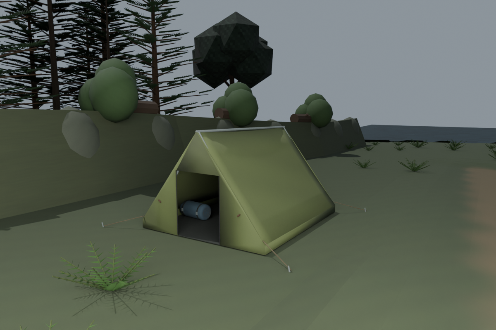
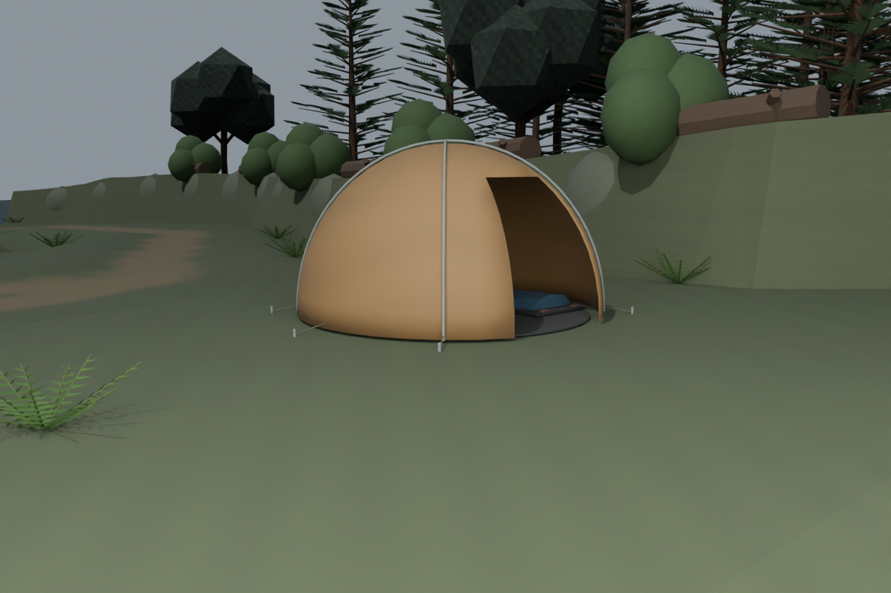
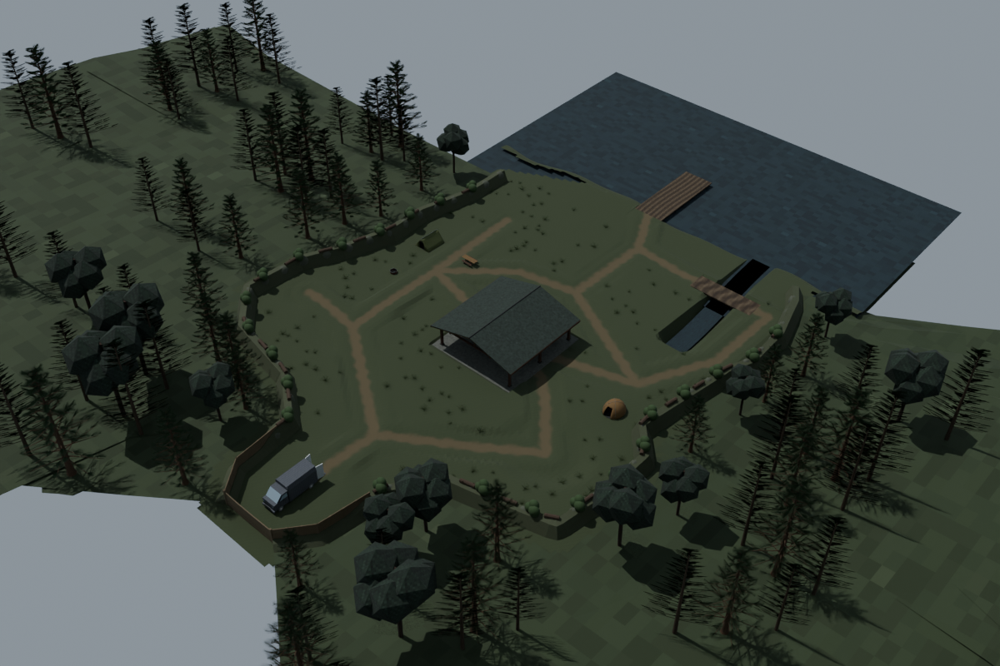

West ridge tent and supported bedding

24 October 2026. Actual native/studio captures. Three original reusable assets, five terrain-fitted placements. Human-scale crouch entry, mat support and contour approaches checked against saved triangles. Runtime integration and final art acceptance remain pending.
Source/placement contract · Actual checks · Remaining detail queue




1160 triangles · Editable source · GLB

3832 triangles · Editable source · GLB

3540 triangles · Editable source · GLB
No original terrain, earlier model checkpoint, canonical van or old level blockout was replaced. Approach wear, packed/collapsed variants, full actor collision, ghost hunts, circuits, cameras, LAN and hardware performance remain later gates.